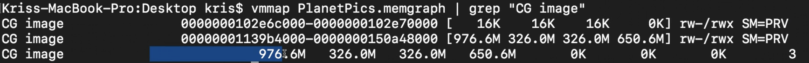
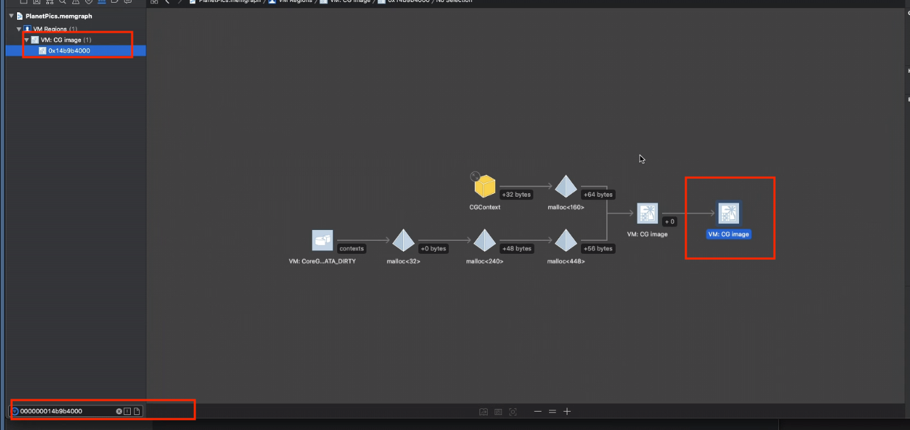
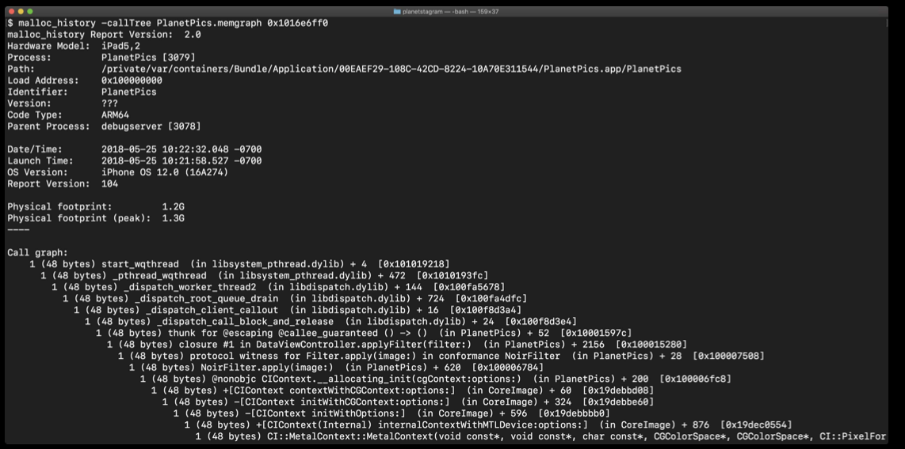

A glimpse of iOS Memory Deep Dive
This is an pretty good session about iOS memory. iOS Memory Deep Dive - WWDC 2018 - Videos - Apple Developer. I saw it and took some notes here.
Not all memory is created equal.
There are dirty memory, clean memory, compressed memory in iOS system. We have to know the differences between them.
Page
Page is typically 16KB in size and operating system gives it to you when your app requests memory.
1 | memory in use = number of pages x page size |
Some pages can hold multiple objects, and some objects
can span multiple pages.
Pages Types
Clean
- Data that can be paged out of memory
- Memory mapped files
- frameworks*
Dirty
- memory written by an app
- all heap allocations
- decoded image buffers
- Comporessed
There is no traditional disk swap in iOS
Memory compressor
The system will do the compression and decompression for you by memory compressor.
What does Memory compressor do?
- Compresses unaccessed pages
- Decompresses pages upon access
Before being compressed:

After being compressed:
When you got Memory warning, you App is not always the cause. Maybe because the compressor freeing memory. Like, you receiving a phone call while using the App.
After being decompressed:

After removing objects in didReceiveMemoryWarning

Caching
- Trade-offs between CPU and memory. Caching can reduce the CPU usage and time complexity, but it costs memory.
- Remember the compressor. When decompressing, the used memory will be increased.
- Prefer NSCache over dictionary.
Memory Profile
It is the dirty size + the compressed size that the system uses to determine how much memory the app is really using.
We should mainly focuse on these two part, dirty and compressed memory when analyzing the memory profile.
Tools for Profiling Footprint
Xcode memory gauge

Instruments
- Allocations
- Leaks
- VM Tracker
- providing profiles for dirty and compressed memories.
- Virtual memory trace
- Debugger

- memory graph

working with memory graph using commands
vmmap
vmmap helps to show some dirty memory info of your app. In general, we should look for the big number for the size.
There are virtual size, resident size, dirty size, swapped size columns here.
According to this session, we can ignore the virtual size, because it is memory requested by the app, while not neccessarily be used. swapped size is related to compressed memory. So we should care more about dirty size and swapped size.
An example of using vmmap to debug a memory issue
First, we can use summary info to look for the big numbers in virtual size and swapped size colomn. Here, we find CG Image takes much more memory than others.
1 | vmmap --summary PlanetPics.memgraph |
Then, we use grep to get more info about CG Image.

There are two regions here, the last row is summary info. The secong CG Image region takes more takes more dirty and swapped memory. So we have to see more infomation of this region by using --verbose option.
All these commands can work with other shell commands, like redirecting the output stream a output.txt file.
1 | vmmap --verbose PlanetPics.memgraph | grep " CG image" | > output.txt |

And we will more regions.
It turns out that vmmap, by default, if it finds contiguous regions, it collapses. A general rule. the later region was created, the later my app’s life cycle it happened. Chance are this later region is more closely tied to whatever caused that memory pike.
So, we start to look at the last region. We can use the start memory address of the last region and search it in the memory graph in XCode.

Or use leak to get the trace tree. By scanning these info, we would find more clues.

Here, using malloc_history to see the back trace for this object, we found the related code creating this particular VM memory.

- vmmap and AWK
This command can work with other commands.
leak
1 | leaks App.memgraph |
It not only shows the cycle, but also the root object of the cycle.
leak circle
root object
heap
- Shows objects allocated on the heap;
- useful for indentifying large objects in memory adn what allocated it.
1
2heap App.memgraph
heap App.memgraph -addresses all | <classes-pattern>
heap command shows the class name in CLASS_NAME column, the num of the class in COUNT column, the average size of the object in the AVG column, the total size in the BYTES column.
1 | heap App.memgraph -sortBySize | > ~/output.txt |
malloc_history
In some cases, we not only want to know the memory size, but also want to know the how it created. So, here comes the malloc_history command.
- enable the malloc_stack logging

1 | malloc_history App.memgraph [address] |

Which tool to pick
Use vmmap and heap to find some objects or regions with big number, use leak to see references between objects, like finding circular reference; use malloc_history to see how it is created.
Related:
Author : RY Zheng
Link : https://suelan.github.io/2020/05/03/An-glimpse-of-iOS-Memory-Deep-Dive/
License : MIT